| 기종 | 보잉 787-10 |
| 출발 | 인천 (ICN) 제2터미널 · 10/3(토) 16:00 |
| 공항 도착 | 13:00~13:30 도착 필수 |
| 도착 | 샌프란시스코 (SFO) 제1터미널 · 같은 날 10:40 AM (현지) |
| 렌터카 | Dollar · 12:00~12:30 픽업 (Suburban 7인승) |
| 10:40 | SFO 도착 · 입국심사 |
| 12:00 | 렌터카 픽업국제운전면허증 + 한국 면허증 + 여권 + 결제 카드 |
| 오후 | 파인아트 → 금문교 → 소살리토다리 건너 북쪽 · 점심 또는 커피 |
| 늦은 오후 | 피셔맨스워프 → 롬바드 → 트윈픽스트윈픽스 일몰 약 18:50 |
| 21:00 | 해리스 스테이크하우스 (예약 완료)2100 Van Ness Ave · 오픈테이블 예약 |
📍 갈 만한 곳
명소 이름을 누르면 나무위키에서 열립니다
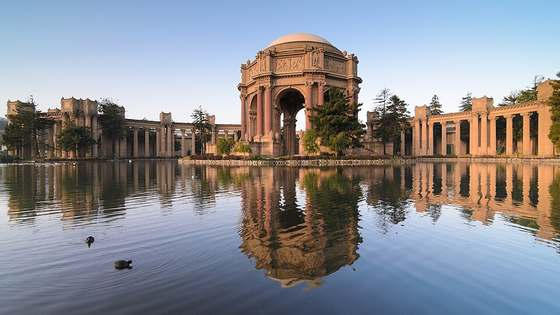
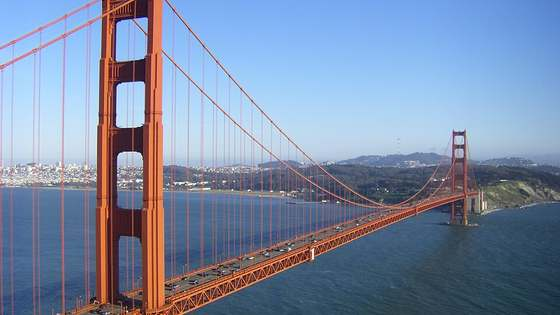
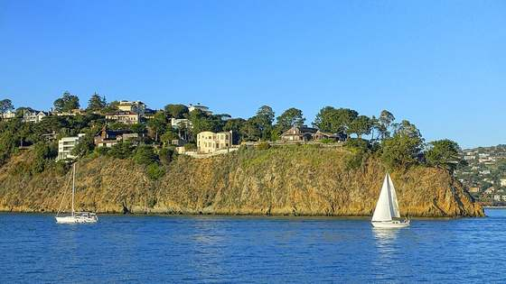
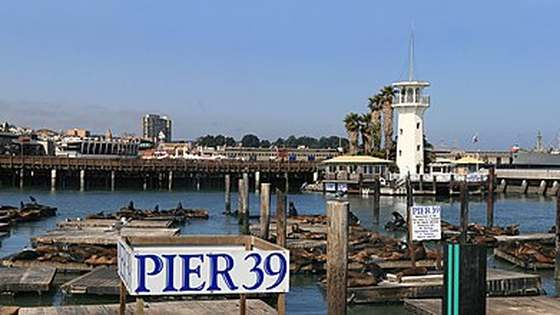
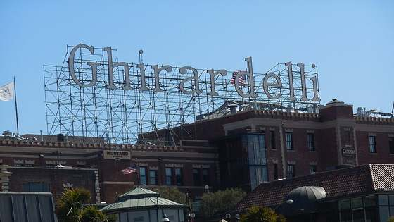
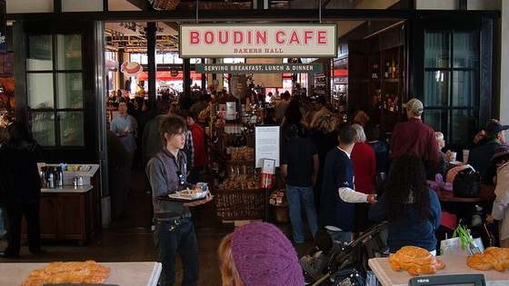
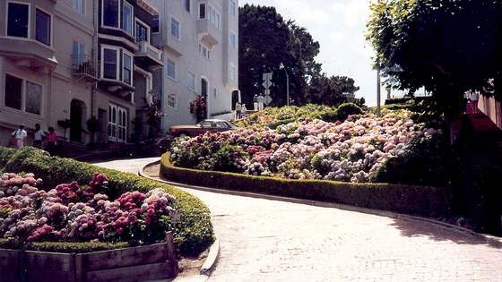
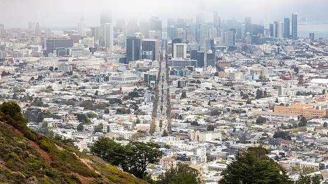
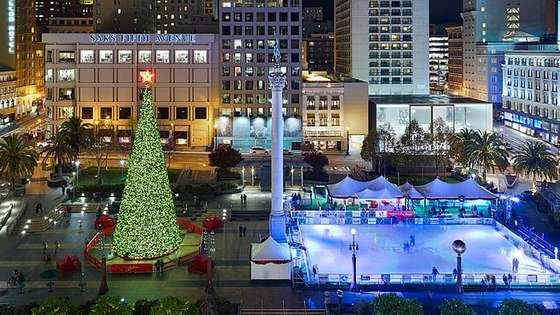
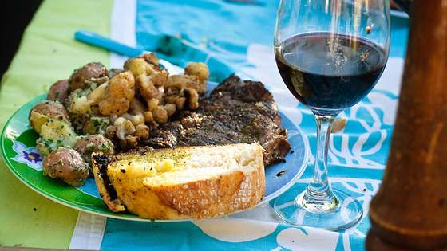
| 숙소 | 힐튼 샌프란시스코 유니언 스퀘어 |
| 객실 | 더블베드 2개 + 킹베드 1개 |
| 예약번호 | 3531186463 |
| 예약처 | 힐튼 공식 |
| 주차 | 호텔 주차 선결제 완료 |
| 오전 | 샌프란시스코 출발 · 오크데일 주유/간식 |
| 정오 | 요세미티 국립공원 도착 |
| 오후 | 미스트 트레일 (버널 폭포 정상)왕복 4km · 2시간 30분~3시간 · 트레킹화 필수 |
| 일몰 | 글레이셔 포인트 (선택)편도 1시간 운전 · 체력 남으면 강력 추천 |
📍 갈 만한 곳
명소 이름을 누르면 나무위키에서 열립니다
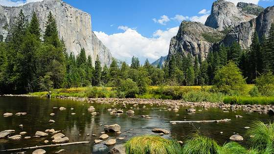
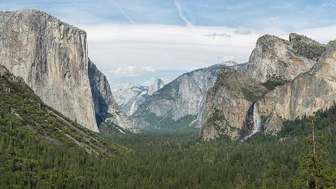
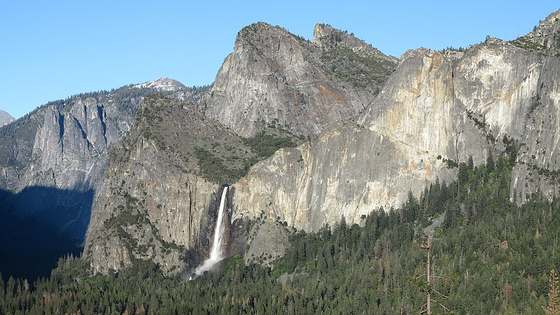
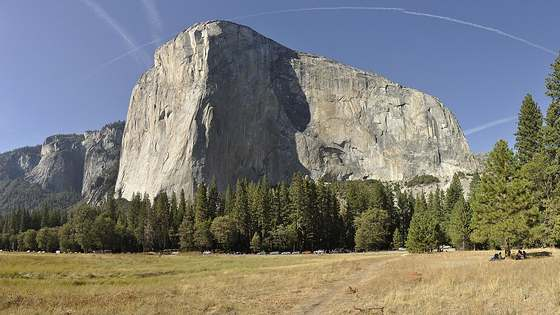
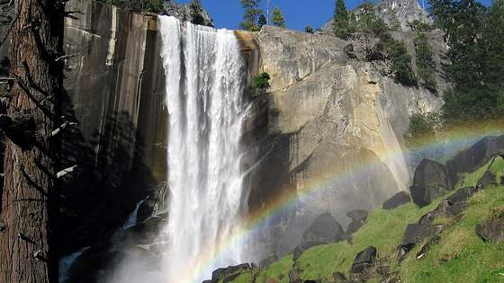
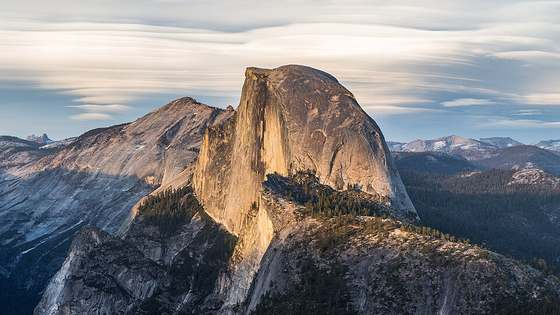
| 숙소 | Yosemite Valley Lodge |
| 객실 | Traditional Room (2 Double Beds) × 2실 |
| 예약번호 | 10005M0VC |
| 예약처 | 요세미티 공식 (recreation.gov) |
| 일출 | 터널뷰 일출숙소에서 15분 · 방한 필수 |
| 오전 | 티오가 로드 횡단올름스테드 포인트 · 테나야 호수 · 투올러미 메도우 |
| 점심 | 리 바이닝 / 비숍주유 · 식사 |
| 오후 | 앨라배마 힐스 (론파인) |
| 저녁 | 세븐 매직 마운틴 → 라스베이거스 도착 |
📍 갈 만한 곳
명소 이름을 누르면 나무위키에서 열립니다
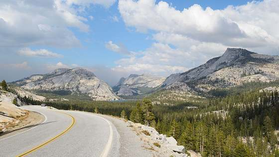
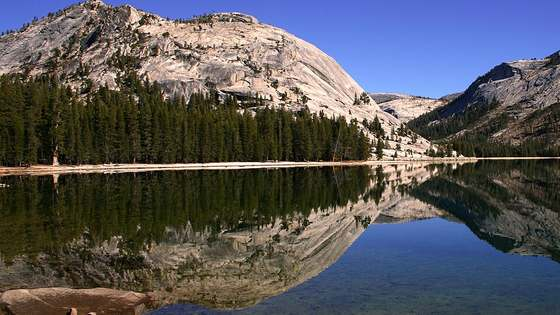
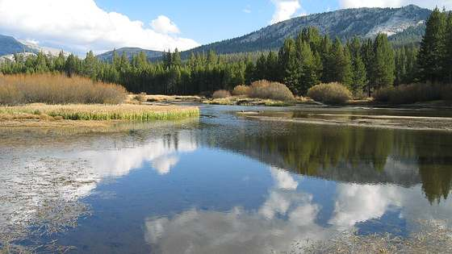
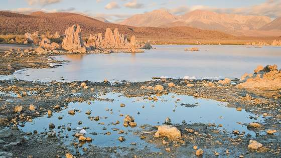
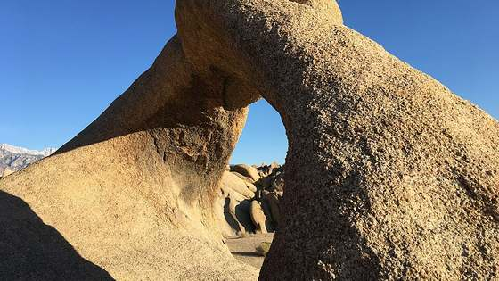
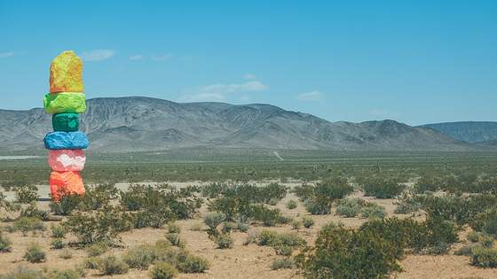
| 숙소 | Paris Las Vegas Resort & Casino |
| 객실 | 2실 · 객실타입 Assigned on Arrival |
| 예약번호 | 7260825N696225 7260825N493460 |
| 예약처 | 여기어때 (Naver Secret Deal) · rsv@triptopaz.com |
| 현장결제 | 없음 — 주차·리조트피 모두 선결제 포함 |
| 이른 아침 | 라스베이거스 출발 |
| 오전 | 후버댐 경유 (선택) → 킹맨 주유 |
| 점심 | 셀리그만 (루트 66 올드타운) |
| 오후 | 세도나 — 오크 크릭 캐년 드라이브 · 카테드럴 록 |
| 일몰 | 그랜드캐년 마더 포인트일몰 후 별 관측 — 담요·핫팩 |
📍 갈 만한 곳
명소 이름을 누르면 나무위키에서 열립니다
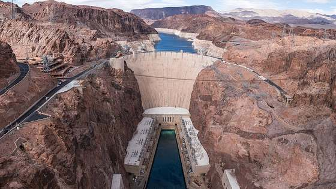
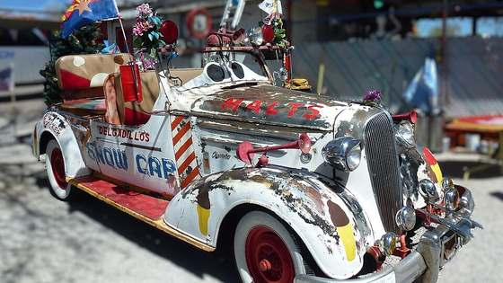
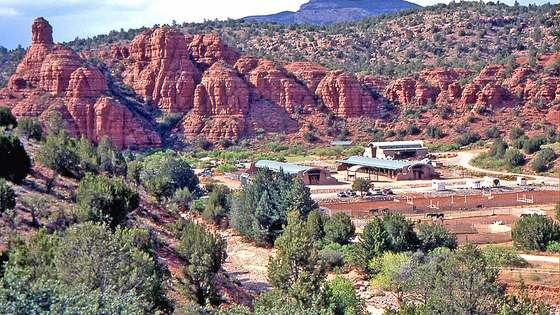
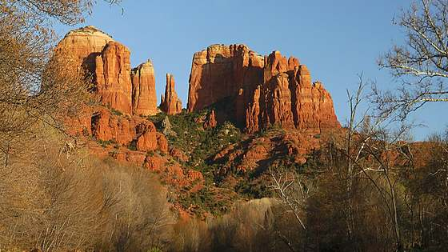
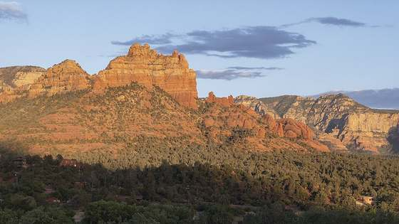
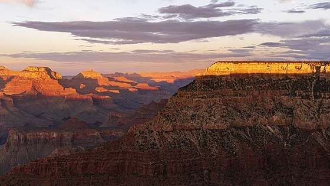
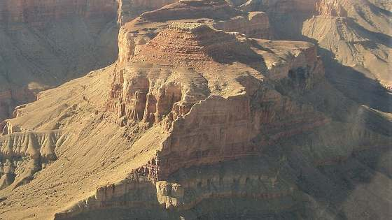
| 우리 방 | Grand Canyon Plaza Hotel · Deluxe Room |
| 예약 | 20081687 · 아고다 |
| 부모님 | Grand Canyon Hotel & Suites · Standard Room |
| 예약 | 1780072623 · 아고다 |
| 위치 | 둘 다 투사얀 · 사우스림 입구에서 약 15~20분 · 무료 자체 주차 |
| 새벽 | 투사얀 숙소 출발공원 입구까지 15~20분 + 셔틀 대기 — 일출 기준 역산해서 출발 |
| 일출 | 사우스 카이밥 트레일 (우아 포인트)왕복 2.6km |
| 오전 | 데저트뷰 워치타워 → 동쪽 출구 |
| 점심 | 카메론 트레이딩 포스트주유 · 나바호 공예품 |
| 오후 | 모뉴먼트밸리 · 포레스트 검프 포인트 |
| 일몰 | 호슈밴드 → 페이지 숙소 |
📍 갈 만한 곳
명소 이름을 누르면 나무위키에서 열립니다
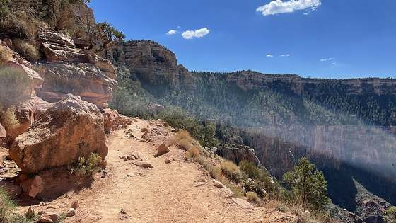
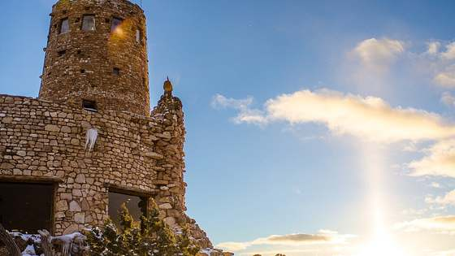
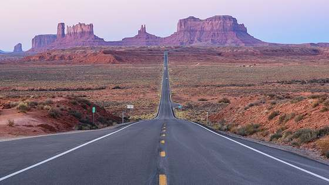
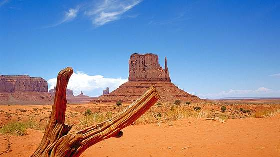
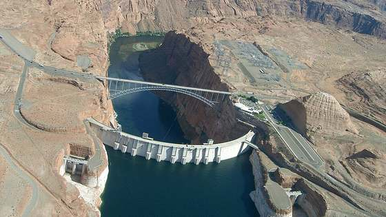
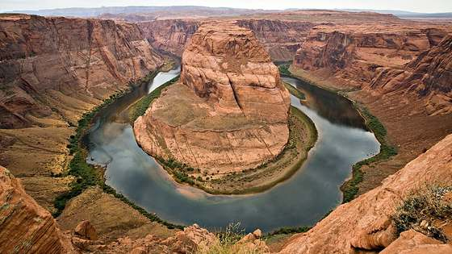
| 숙소 | Comfort Inn & Suites Page at Lake Powell |
| 객실 | Standard (Queen × 2) × 2실 · 무료 주차 · 조식 |
| 예약번호 | 26082613009D13ES1 |
| 예약처 | 여기어때 |
| 08:00 | 로어 엔텔롭 캐년 · Ken's Tours KEN-37117808:00~09:00 · 4인 결제 완료 · 시간 엄수 · 가방 반입 제한 · 가이드 팁 별도 |
| 오전 | US-89 북상 → 레드 캐니언 경유 |
| 정오 | 브라이스 캐년선라이즈 · 선셋 · 인스퍼레이션 포인트 |
| 오후 | 자이언 (터널 통행 가능 시)불가 시 콜롭 캐년으로 대체 |
| 저녁 | 라스베이거스 도착 · 자유시간 |
📍 갈 만한 곳
명소 이름을 누르면 나무위키에서 열립니다
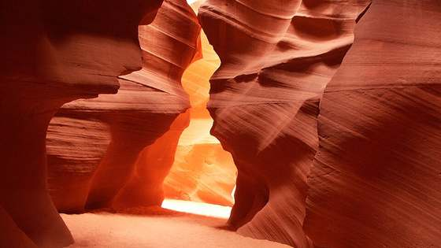
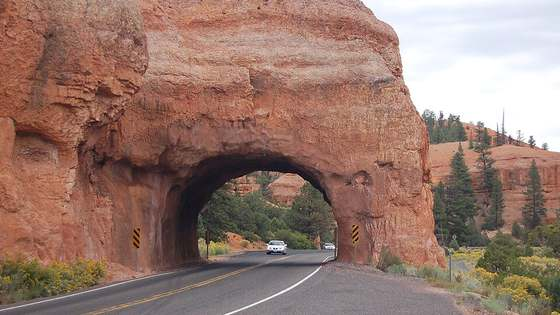
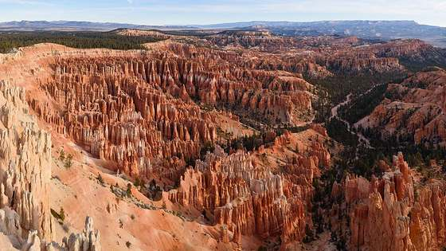
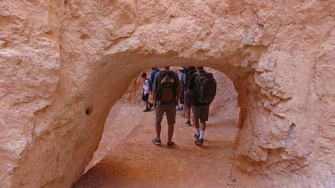
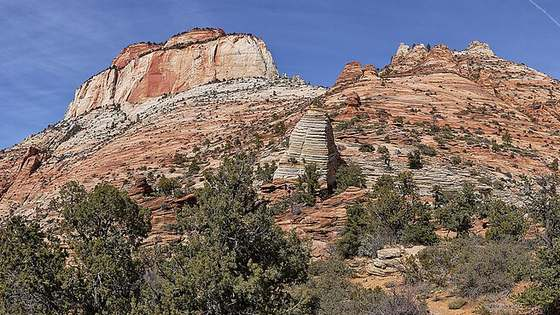
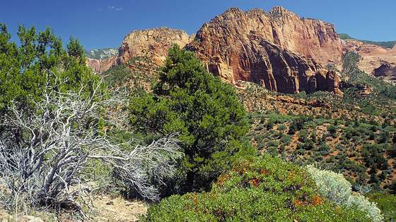
| 숙소 | Bellagio Las Vegas · 10/8~10/10 2박 연박 |
| 객실 1 | PREMIER (2 Queen Beds) · 260828150113B4ES1 |
| 객실 2 | PREMIER (King Bed) · 26082815013B6AES1 |
| 예약처 | 여기어때 |
| 현장결제 | 리조트피 + 주차비 — 체크아웃 시 별도 청구 |
| 일시 | 10/9(금) 14:00 · 입장 13:00까지 |
| 좌석 | 207구역 16열 3~6번 (4인) |
| 예약처 | Ticketmaster · 결제 완료 |
| 입장 | 이메일 또는 모바일 바코드 — 출발 전 앱에 미리 저장 |
| 일시 | 10/9(금) 21:00 |
| 장소 | 'O' Theatre at Bellagio — 숙소 안이라 이동 불필요 |
| 좌석 | Sec 102, Row D, Seat 13~16 (4인) |
| 예약처 | Ticketmaster · 결제 완료 |
| 08:00 | 레드록 캐년 시닉 드라이브 (선택)늦어도 11:30 복귀 · 생략 시 호텔 휴식 |
| 12:00 | 스트립 복귀 · 점심 |
| 13:00 | 스피어 입장 마감벨라지오에서 차로 10분 · 주차 시간 여유 두기 |
| 14:00 | 스피어 공연 · 207구역 16열 |
| 오후 | 하이롤러 · 아웃렛 · 수영장 |
| 18:00 | 저녁 식사벨라지오 안이라 이동 부담 없음 |
| 21:00 | 태양의 서커스 O쇼'O' Theatre at Bellagio · Sec 102 Row D |
📍 갈 만한 곳
명소 이름을 누르면 나무위키에서 열립니다
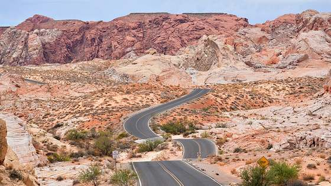
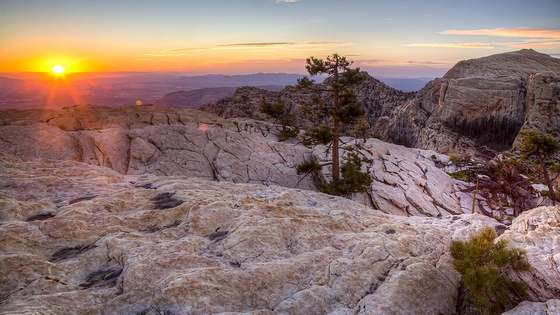
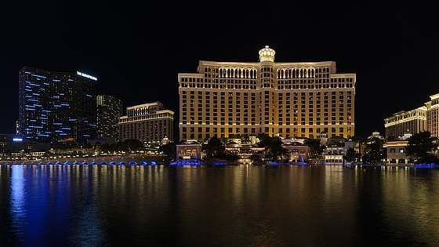
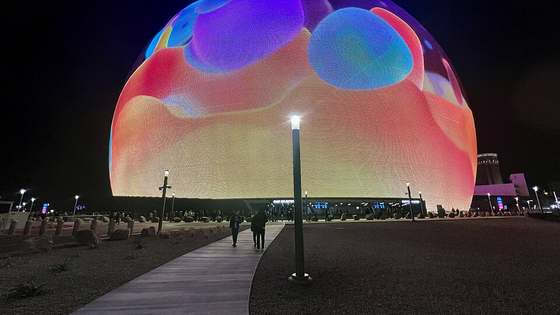
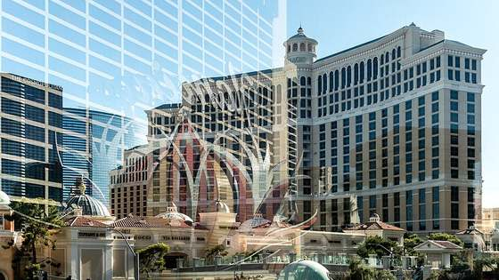
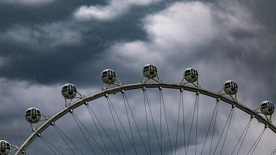
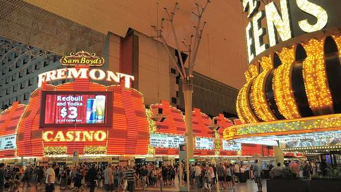
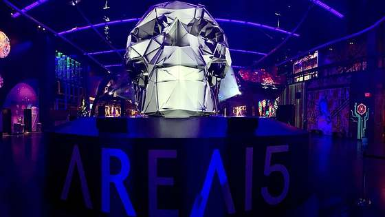
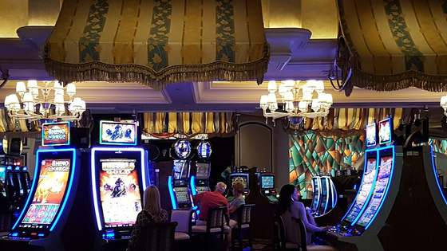
| 숙소 | Bellagio Las Vegas (2박째) · 여기어때 |
| 예약번호 | 260828150113B4ES1 26082815013B6AES1 |
| 오전 | 자유시간 · 체크아웃쇼핑 · 마지막 식사 |
| 오후 | 짐 정리 · 주유 |
| 19:30 | 렌터카 반납 (LAS 렌터카 센터) |
| 20:50 | LAS 제3터미널 도착국제선은 3터미널 — 렌터카 센터에서 셔틀 |
| 23:50 | KE006 출발 |
| 기종 | 보잉 777-300ER |
| 출발 | 해리 리드 공항 (LAS) 제3터미널 · 10/10(토) 23:50 |
| 공항 도착 | 20:50 도착 필수 |
| 체크인 마감 | 22:50 · 탑승 시작 23:20 |
| 도착 | 인천 (ICN) 제2터미널 · 10/12(월) 04:40 |
📍 남는 시간에
명소 이름을 누르면 나무위키에서 열립니다
| ✈️ 항공 · 렌터카 | |
|---|---|
| 대한항공 | KE023 B787-10 · 10/3(토) 16:00 인천 T2 → SFO T1 10:40 KE006 B777-300ER · 10/10(토) 23:50 LAS T3 → 인천 T2 10/12(월) 04:40 FSCPI9 |
| Dollar 렌터카 | Chevrolet Suburban 7인승 SFO 10/3 12:30 픽업 → LAS 10/10 19:30 반납 |
| 🏨 숙박 (7박) | |
| 10/3~4 SF | 힐튼 SF 유니언 스퀘어 · 더블2+킹1 · 힐튼 공식 3531186463 · 주차 선결제 완료 |
| 10/4~5 요세미티 | Yosemite Valley Lodge · Traditional 2실 · 요세미티 공식 10005M0VC |
| 10/5~6 LV | Paris Las Vegas · 2실 · 여기어때 (Naver Secret Deal) 7260825N696225 7260825N493460 주차·리조트피 선결제 포함 — 현장 결제 없음 |
| 10/6~7 그랜드캐년 | 공원 내 롯지 홍수로 운영중단 → 투사얀으로 변경 Grand Canyon Plaza Hotel · Deluxe (우리 방) · 아고다 · 20081687 Grand Canyon Hotel & Suites · Standard (부모님) · 아고다 · 1780072623 둘 다 투사얀 · 사우스림 입구 15~20분 |
| 10/7~8 페이지 | Comfort Inn & Suites Page · Queen×2 2실 · 여기어때 26082613009D13ES1 · 무료 주차 · 조식 포함 |
| 10/8~10 LV | Bellagio · PREMIER 2 Queen 260828150113B4ES1 PREMIER King 26082815013B6AES1 · 여기어때 리조트피 + 주차비 현장 청구 |
| 🎫 액티비티 · 식사 · 패스 | |
| 10/3 21:00 | 해리스 스테이크하우스 · 오픈테이블 예약 (식사비는 현장 결제) |
| 10/8 08:00 | 로어 엔텔롭 캐년 · Ken's Tours · 4인 · KEN-371178 |
| 10/9 14:00 | Sphere 공연 · 207구역 16열 3~6번 · Ticketmaster 입장 13:00까지 · 모바일 바코드 미리 저장 |
| 10/9 21:00 | 태양의 서커스 O쇼 · 'O' Theatre at Bellagio · Sec 102, Row D, Seat 13~16 · Ticketmaster |
| 연간패스 | America the Beautiful · 구매 완료 · recreation.gov 요세미티·그랜드캐년·브라이스·자이언 적용 · 패스 소지자 여권 필수 ※ 모뉴먼트밸리·밸리오브파이어는 미적용 (별도 입장료) |
| 🏨 숙박 부대비용 | |
|---|---|
| 벨라지오 | 리조트피 약 $50/박·실 × 2박 × 2실 ≈ $200 주차 약 $25/일 × 2일 ≈ $50 체크아웃 시 카드 청구 · 여기어때 예약이라 선결제에 미포함 |
| 그랜드캐년 | 롯지 주차 무료 · 부대비용 없음 |
| 패리스 / 페이지 / 힐튼 | 해당 없음 (선결제 포함) |
| 🎟️ 입장료 · 통행료 | |
| 모뉴먼트밸리 | 나바호 부족공원 1인 $8 × 4인 ≈ $32 연간패스 사용 불가 |
| 호슈밴드 | 주차 $10 (차량당) |
| 밸리 오브 파이어 | 차량당 $15 (가는 경우만) |
| 세도나 | Red Rock Pass $5~15 (트레일 주차 시) |
| 자이언 터널 | 대형차 통행 허가 $15 (필요 판정 시) |
| 모노 호수 | 사우스 터파 1인 $3 ≈ $12 |
| 금문교 | 남향 통행료 $9~10 · 렌터카 업체가 수수료 붙여 후청구 |
| ⛽ 주유 | |
| 총 주유비 | 약 3,000km · Suburban 실연비 감안 $380~500 캘리포니아 구간이 20~30% 비쌈 · 네바다/애리조나에서 채우면 절약 |
| 💵 팁 (미국 관행) | |
| 식당 | 세전 금액의 18~20% · 해리스 스테이크하우스 4인이면 $80~120 예상 |
| 발레파킹 | 차 받을 때 $3~5 |
| 하우스키핑 | $3~5/박 · 베개 위에 두기 |
| 벨보이 | 가방 1개당 $2 |
| 투어 가이드 | 엔텔롭 캐년 1인 $5~10 ≈ $20~40 |
| 🍽️ 미예약 · 변동 | |
| 식비 | 해리스 외 전부 미예약 1일 4인 기준 $120~200 (캐주얼) / $250~400 (레스토랑) 8일 총 $1,200~2,000 예상 |
| 하이롤러 | 4인 약 $100~140 (탑승 시) |
| 쇼핑·기념품 | 변동 |
※ 입장료·주차비·팁 관행은 현지 사정에 따라 달라질 수 있습니다. 벨라지오 리조트피와 주유비가 현장 지출의 대부분을 차지합니다.
자바스크립트 없이도 동작 · 지도는 파일 내장 · 장소 사진은 img/ 폴더에 있어 index.html과 함께 두어야 표시됩니다
지도는 실제 경위도를 옮긴 개념도입니다 (실제 도로 형상과는 다름)